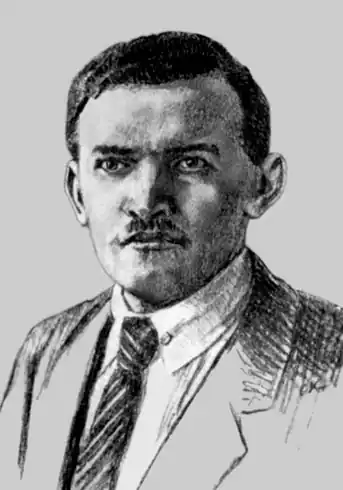

Дмитро Загул
(1890 — 1944)
Д. Загул досі залишається належним чином не поцінований насамперед тому, що його ім'я звично асоціюється з символізмом, течією, що, як вважалося, не мала виразного національного обличчя. Літературознавці (саме літературознавці, а не критики 20-х років), довго вагаючись, чи був взагалі той український символізм, врешті визнали його однотонним і нецікавим, вкрай декадентським ("не довіряв розумові, уникав злоби дня, обертаючись у колі снів і візій"), містичним, лірико-споглядальним, далеким від драматичних колізій власне філософсько-естетичної концепції символізму. Окрім того, критикуючи естетство, тривалий час дослідники зовсім не брали до уваги, що символізм — це філософсько-поетична школа, яка покликана виразити певний умонастрій і світосприймання, що символ-образ має відтворити водночас реальний, матеріальний смисл явищ і його ідеальну заданість, сакралізовану дійсність. Це вимагало звернення до людського духу, це і робив поет-філософ Д. Загул. Про самого поета маємо скупі дані. Народився 28 серпня 1890р. у с. Мілієві Вижницького повіту на Буковині в сімї напівспролетаризованого селянина. Рано осиротів. На кошти місцевого вчителя, який помітив у хлопчині неабиякі здібності, навчався в Чернівецькій гімназії, згодом — на філософському факультеті Чернівецького університету. В лютому 1915р. Д. Загул був вивезений до Росії разом із іншими громадськими заручниками під час відходу російської армії. Згодом утік в Україну. Працював санітаром, канцеляристом, бухгалтером, співробітником видавництв, наросвіти, сільським учителем. Писати почав ще гімназистом, заохочуваний О. Маковеєм та Б. Лепким. Виданням газети "Нова Буковина" вийшла перша поетова книжка "Мережка" (1913), але сам автор вважав дебютною збірку "З зелених гір" (1918) — завдяки їй здобув певне літературне ім'я. Для нас ця збірка цікава й показова як вияв раннього символізму поета, коли Д. Загул почав "вростати" у метафізичну схему символістської теорії. Назвавши такий символізм "поміркованішим, прим'якшеним і до певної міри філософічним", Я. Савченко слушно зауважив: "...фігурально висловлюючись, бореться в поетові "небо і земля". І небо його вабить, але й земля солодка". Якщо більшість віршів збірки "З зелених гір" написані під впливом рідного оточення (принаймні західноукраїнські мотиви звучать тут дуже виразно), то на "чужині", в Наддніпрянській Україні, поет створює збірку "в одному настрої" з досить промовистою і водночас туманною назвою — "На грані" (1919). О. Білецький назвав її однією з найстрашніших книжок українського модернізму, книжкою крайнього соліпсизму й безнадійної містики. Відкидаючи поширені свого часу звинувачення поета в "породжених запереченням дійсності... мотивах індивідуалістської ущербності", згадаймо натомість історичне тло, на якому писались ці вірші. Про "сторозтерзаний Київ" казав П. Тичина, М. Семенко тоді писав: "З перерізаним горлом і захололим осміхом губ Я стояв І куди рушити не знав..." Подібною була й реакція Д. Загула на драматичні події 1919-го: Вороногривий кінь Махнув розхристаним хвостом. На землю впала чорна тінь, Лежить земля хрестом. Хрестом — З опльованим Христом. . . . . . . . . . . . . . . . . . . . . . . . . Здригнулася блакить. Така чудна, така чуйна! Куди? Куди той кінь летить? Невже ж це знов війна? Війна — Сумна старовина! Не забуваймо й іншої обставини. Д. Загул здобував освіту на філософському факультеті й був добре обізнаний із філософією Ф. Ніцше, А. Шопенгауера, Е. Канта, з основними положеннями трансцендентальної логіки, — ці теорії, поза всіляким сумнівом, відбилися у філософських абстрактних міркуваннях збірки "На грані": "На грані вічного нічого, — Думок нема. Німий язик, німа розмова, Душа німа"; або: "Ми тінь... Ми тінь людей, що були. Їх відбитка одна". Безперечно, в таких віршах Д. Загул перегукувався не так з ортодоксальним символістським світовідчуттям, як з релігійно-містичною ("теургічною") лінією російського символізму, теософською філософією. Численні рецензії на збірку засвідчили, що в 20-ті роки її сприймали схвально і поважно, зовсім не так, як у наступні десятиліття. Філософська лірика збірки "На грані" звучить глибоко й своєрідно, подібно до, скажімо, символістських картин М. Чюрльоніса — "Істина", "Думка", "Похорон" тощо. Якої ж поетичної трансформації зазнає далі Дмитро Загул? Він "з поета романтичного, символістського в розумінні вузькому, грунтовно переродився в справді пролетарського поета", пройшов шлях від символізму до соціалістичного реалізму, — і тоді, і пізніше писалось про творчий "злам" Загула в тому ж типово більшовицькому ключі. Сам поет, мабуть, пишучи вірш "Порозпліталися гірлянди", й гадки не мав, як символічно щодо його власної ідейно-естетичної еволюції пролунають такі рядки: Треба пірвати ті вінки З білих лілій і білих бігоній, Хай розвиваються наші квітки Втіхи, безумно червоної!.. Вибір зроблено: в поезію Д. Загула стрімко вривається "жовтневий вихор". Третя збірка "Наш день" (1925) засвідчила народження поета-романтика революції. Змінюються не лише ідейні обрії, проблематика, а й жанрово-стильові особливості його віршів. Часом надуживаючи ура-революційною риторикою, він створює сповнені соціального оптимізму гімни-прокламації, декларує загальноприйняті погляди на дійсність і мистецтво зокрема. 1927р. вийшла підсумкова збірка поезій Д. Загула "Мотиви" (з передмовою О. Білецького). У ній поет цілком виявив себе як апологет нової доби. Це знайшло вияв у порадах, на кшталт: Візьми число щоденної газети — Там тисячі не виспіваних тем ("Даремно ти турбуєшся, поете!") Д. Загул присвячує будівництву Дніпрогесу поему "Геліополіс" (1927); пише цикл "Туга за рідним краєм" — сподіванки на близьке возз'єднання буковинців з Україною. Але революційний оптимізм не справджувався, реальна дійсність дисонувала із мріями. Так чи так, а після згаданої збірки окремі книжки Д. Загула уже не виходили, він редагує альманах "Західна Україна", пише критичні статті, перекладає. Д. Загул інтерпретував українською мовою таких німецьких митців, як Гете, Шіллер, Гейне, Бехер... Слід сказати, що помітно виступав він і як критик та літературознавець. Досить назвати його статті "Спад ліризму в сучасній українській поезії", "Зріст і сила творчості П. Тичини", підручник з теорії поезії "Поетика" (1923). У 1930р. він підготував і видав із своєю передмовою збірку творів В. Кобилянського. Та як член літорганізації "Західна Україна" він уже 1933р. зазнав безпідставного звинувачення в націоналізмі і був репресований. Відбував заслання на Колимі. За останніми даними, відбувши десятирічне ув'язнення, одержав додатковий термін і помер від серцевого нападу влітку 1944р. на Півночі. Г. Черниш Історія української літератури ХХ ст. — Кн. 2. — К.: Либідь, 1998.